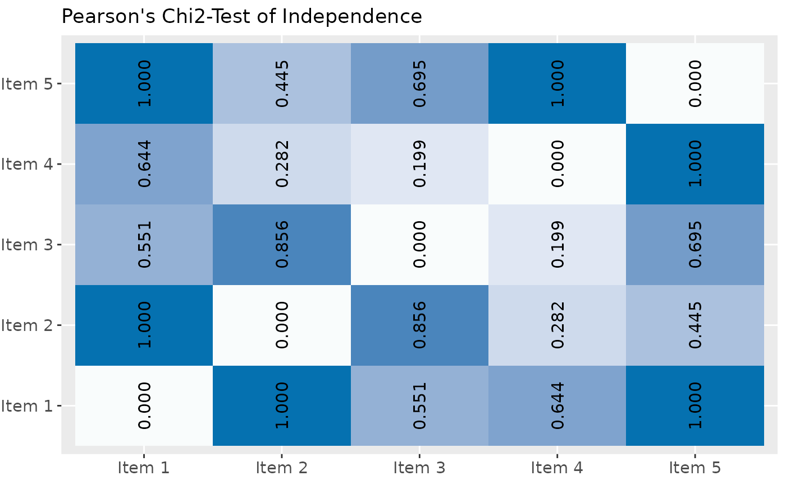

Plot Pearson's Chi2-Test of multiple contingency tables
Source:R/sjPlotPearsonsChi2Test.R
sjp.chi2.RdPlot p-values of Pearson's Chi2-tests for multiple contingency tables as ellipses or tiles. Requires a data frame with dichotomous (dummy) variables. Calculation of Chi2-matrix taken from Tales of R.
Usage
sjp.chi2(
df,
title = "Pearson's Chi2-Test of Independence",
axis.labels = NULL,
wrap.title = 50,
wrap.labels = 20,
show.legend = FALSE,
legend.title = NULL
)Arguments
- df
A data frame with (dichotomous) factor variables.
- title
character vector, used as plot title. Depending on plot type and function, will be set automatically. If
title = "", no title is printed. For effect-plots, may also be a character vector of length > 1, to define titles for each sub-plot or facet.- axis.labels
character vector with labels used as axis labels. Optional argument, since in most cases, axis labels are set automatically.
- wrap.title
numeric, determines how many chars of the plot title are displayed in one line and when a line break is inserted.
- wrap.labels
numeric, determines how many chars of the value, variable or axis labels are displayed in one line and when a line break is inserted.
- show.legend
logical, if
TRUE, and depending on plot type and function, a legend is added to the plot.- legend.title
character vector, used as title for the plot legend.
Examples
# create data frame with 5 dichotomous (dummy) variables
mydf <- data.frame(as.factor(sample(1:2, 100, replace=TRUE)),
as.factor(sample(1:2, 100, replace=TRUE)),
as.factor(sample(1:2, 100, replace=TRUE)),
as.factor(sample(1:2, 100, replace=TRUE)),
as.factor(sample(1:2, 100, replace=TRUE)))
# create variable labels
items <- list(c("Item 1", "Item 2", "Item 3", "Item 4", "Item 5"))
# plot Chi2-contingency-table
sjp.chi2(mydf, axis.labels = items)
